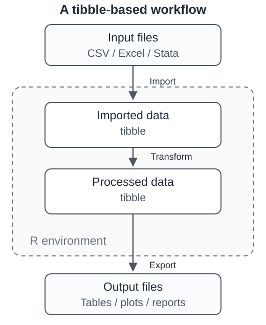
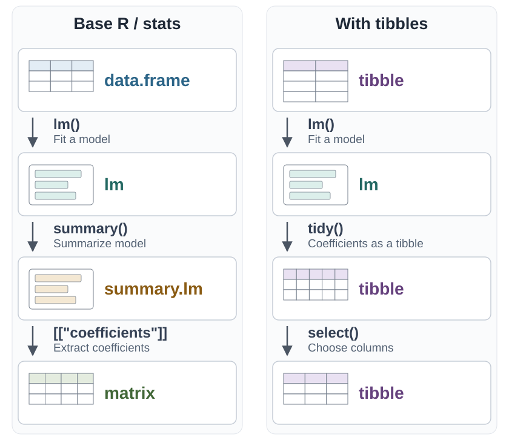

library(tidystata)2 Objects, data structures, and workflows
2.1 Objects and types
The examples in Section 1.4 have already introduced several R objects. We can use var_type() from tidystata to identify an object’s type:
# A real number (double)
var_type(25)[1] "double"# Text (character)
var_type("Hello, R!")[1] "character"# A function (function)
var_type(sqrt)[1] "function"Functions usually appear in the form f(), with parentheses.
2.2 Data and functions
In just a few lines of code, we have encountered three types of objects: doubles, characters, and functions. Looking at it another way, those lines of code are largely made up of objects.
We can broadly divide objects into data and functions. In a broad sense, data are like information: 25 and "hello" both contain information. This is a wider meaning than the one we often use in everyday conversation. I think of data as anything meaningful in our lives, including what we eat, wear, and do, and where we live and travel.
NoteNote
Any information can be data.
Code that contains only data usually does very little. Think of data as nouns and functions as verbs. “Students, scores, average” is a list of words. “Calculate the average of the students’ scores” describes an action. In the same way, a function tells R what to do with data.
NoteNote
In R, data usually act like nouns, while functions usually act like verbs.
2.3 Dimensions of data
Two questions help us understand a data structure: How are its values organized? And can it contain different types of values? A sequence, a table, and a collection of smaller collections organize information in different ways. Figure 2.1 illustrates these common structures in R.
A single value, such as the test score 85 or the state abbreviation "CA", is our starting point. You can picture it as a point, or zero-dimensional (0D) information. In R, however, even one number or one piece of text is stored as a vector of length one.
An atomic vector holds values of one type, such as a sequence of numeric scores. A list can hold different types together: a score, a state abbreviation, and a logical value such as TRUE. Its elements can also be larger objects, including other lists.
A matrix arranges values in rows and columns. In its common atomic form, all entries have the same type. A data frame also has rows and columns, but each column can have its own type. For example, student names can be text, scores can be numeric, and pass status can be logical. Each column has the same number of rows. A tibble is a modern form of data frame used throughout the tidyverse.
An array extends the row-and-column idea to additional dimensions. In a weather dataset, choosing a station, an hour, and a day identifies one temperature reading. A nested list instead contains other lists. It can represent classes containing student records, and different classes can contain different numbers of students. Nesting does not require the regular shape or fixed dimensions of an array.
Figure 2.1 shows these relationships. Repeated colors indicate one type; different colors indicate elements or columns that can hold different types. The labels num (numeric), chr (character), and lgl (logical) identify the example types independently of color. The matrix and array panels show their common atomic forms, while the nested-list panel illustrates a hierarchy.
![Two columns labeled Single type and Multiple types, with rows labeled 1D, 2D, and nD. The pairs are Atomic vector and List, Matrix and Data frame, and Array and Nested list. List elements, data-frame columns, and nested-list groups share a purple, blue, green order. Labels num, chr, and lgl identify the numeric, character, and logical example types without relying on color. The nested list uses overlapping groups to echo the array's layers; nesting represents a hierarchy rather than fixed array dimensions.](fig/data-structures.svg)
2.4 A workflow in R
For statistical analysis, we most often work with one-dimensional and two-dimensional data. Even within those dimensions, R offers many data types. Where should we start?
My view is that learning to work comfortably with tibbles is enough to carry out most data analysis.

Files on disk and objects inside R are different things. For many tabular analyses, we can organize the work in three steps:
- Import data from another format as a tibble.
- Process the tibble.
- Export the tibble to another format.
2.4.1 Sources, formats, and R objects
Imagine receiving a household survey from a research archive. The archive is the source. The downloaded Stata file is the format in which the information is stored. After importing it, you might work with a tibble, which is an R object in your current session. These are three descriptions of the same information at different stages of your work. Changing the format does not, by itself, change whom the survey represents or what its questions mean.
A file format determines how information is recorded and what software can read it. Some formats store little more than rows of text. Others also store column types, variable descriptions, or labels explaining that a code such as 1 means “Employed.” A codebook describes the variables, their values, and important details of data collection. Keep it with the data: importing a file successfully does not tell you how to interpret its contents.
For ordinary tables, the tibble workflow gives us a common starting point. More specialized data sometimes need a different structure. A map needs its geographic shapes as well as a table of attributes; an image needs its arrangement of pixels. We can often derive a table for part of an analysis without treating that table as a replacement for the complete source.
2.4.2 Recognizing input formats
The same survey may be offered in several formats. Choose among those supplied by the producer before converting anything yourself. A labelled statistical file may carry information that a plain-text copy leaves to a separate codebook. Table 2.1 summarizes several formats you are likely to encounter. Use it as a reference when you receive a file, rather than as a list to memorize.
| Format | Contents |
|---|---|
| CSV / TSV | Rows and columns in plain text |
| Excel | Worksheets with tables and formatted cells |
| Stata / SPSS / SAS | Tables with variable and value labels |
| RDS / RData | R objects saved for later use |
| Parquet / Feather | Binary tables for efficient storage |
| JSON / XML / HTML | Nested records or web-page content |
CSV is useful because many programs can read it, but its simplicity has consequences. A column containing 00123 may be an identifier rather than the number 123. A date such as 03/04/2025 needs a convention before we can interpret it. Import tools can guess column types; the readr documentation explains why those guesses sometimes need to be specified explicitly. A small file is not necessarily a simple dataset.
Excel files usually end in .xlsx or .xls. They are convenient when people enter or inspect information by hand. A worksheet designed to look attractive to a reader, however, may contain a title, merged cells, and several tables. R needs to know where the actual observations begin and end. The readxl documentation distinguishes reading a table from reproducing an entire workbook’s layout.
Statistical files, such as Stata’s .dta, SPSS’s .sav, and SAS’s .sas7bdat, deserve a different kind of attention. A survey can distinguish “Refused” from “Not asked,” even when both should be excluded from a calculation. It can also associate numeric codes with category labels. SAS labels may depend on a separate catalog. The haven documentation explains how these conventions differ across R, Stata, SPSS, and SAS. Check them before calculating means or fitting models.
R data files include .rds, .RData, and .rda. They can contain objects other than tables and may depend on particular R or package versions. Parquet (.parquet) and Feather (.feather, sometimes .ftr) are useful for exchanging tables between compatible tools. With any conversion, check which column types, labels, and documentation are retained. JSON and XML can contain nested records; HTML describes web pages. Those structures may need rearranging before they become an analysis table.
Not everything is a standalone table file. A database holds related tables that you request through queries. An application programming interface (API) is a way for software to request information from a service; it may return JSON or a table. These describe ways of obtaining data, rather than a single file format. Similarly, a ZIP archive is a container: open it to find the actual data files and documentation. A name ending in .csv.gz usually means a CSV table compressed with gzip. Extensions such as .dat and .bin are less informative; consult the producer’s instructions.
Spatial files also need their accompanying information. A shapefile is usually a set of related files, rather than just the .shp file; GeoTIFF stores a geographically referenced image or grid. For geographic features, the sf package keeps shapes alongside their attributes. Text, images, and recordings may require other tools before they yield the variables needed for a particular analysis.
The following inventory retains the wider range of sources we may encounter:
Input sources can be grouped by where the data come from and how they are stored:
- Data already available in R
- Saved R data, such as
.RDataand.rdsfiles. - Datasets included with R or R packages.
- Data entered manually in R code.
- Saved R data, such as
- Tabular and statistical files
- Spreadsheets, such as Excel files.
- Data from statistical software, such as Stata, SPSS, and SAS.
- Plain-text tables, such as
.csv,.tsv, and.txtfiles. - Binary table formats, such as
.ftrand.parquetfiles.
- Other structured data and media
- Markup and structured formats, such as XML, HTML, and JSON.
- Geographic data, such as
.shpand GeoTIFF files. - Images.
- Other binary files, such as
.binand.datfiles.
- Databases and online sources
- Remote databases and big data.
- Online datasets and website source code.
- Folders and compressed files
- Folders containing multiple data files.
- Archives and compressed files, such as
.zip,.gz,.bz2, and.xz.
2.4.4 Choosing outputs for their readers
R can write many of the formats above when the appropriate tools support them. The exported file may not retain every feature of the original. R can also produce results for different purposes:
- Tables and console output
- Text and tables in the console, which can be copied or captured in a screenshot.
- Tables in Excel, Markdown, LaTeX, and other formats.
- Figures and charts
- Images in various formats.
- Interactive charts.
- Documents and reports
- Word and PDF documents.
- HTML pages.
- Quarto publications
- Slides.
- Articles and books.
- Websites.
The useful distinction is between data someone will analyze and results someone will read. A collaborator checking your analysis needs usable values and documentation. A reader of an article usually needs a clearly labelled table or figure. A screenshot of a table may be convenient for a conversation, but it is a poor substitute for the underlying values when someone needs to recalculate a result.
Table 2.3 connects common purposes to possible outputs. More than one choice can be sensible. The best choice depends on the recipient’s tools and the information that must survive the handover. When exchanging data, check identifiers, dates, missing values, and labels after conversion. When presenting results, check readability, accessibility, and any release conditions.
| Purpose | Possible output |
|---|---|
| Share an analysis table | CSV / TSV with a variable codebook |
| Inspect or edit values | Excel workbook for manual review |
| Use other statistical software | Stata / SPSS / SAS files for analysis |
| Resume work in R | RDS file preserving one R object |
| Exchange larger tables | Parquet file with column-oriented storage |
| Write a report | Word / PDF / HTML with text and results |
| Share a figure | PNG image or SVG / PDF vector graphic |
For repeated work within R, a saved R object can spare you from rebuilding an intermediate result. It is a working copy, not a universal exchange format: the R documentation describes how RDS saves a single object and cautions against treating it as a general interchange format. For larger tables, Parquet uses column-oriented storage and compression; its advantages are most relevant when your tools and workflow can use them.
For a figure, consider both size and destination. A PNG stores pixels, so its export dimensions affect how readable its labels will be. SVG and PDF can preserve vector lines and text when the graphics and destination support them. For a written report, Quarto can combine analysis with tables, figures, and prose. The output file serves the audience; retain the source code so that you can regenerate it.
There is no need to learn every format now. Begin with the file your project supplies, understand what its rows and columns mean, and choose an output that the next person can use. A successful conversion preserves the meaning of the information, not just the number of rows.
These lists are not exhaustive; R can work with many other sources and outputs.
Learning to use tibbles as a bridge opens up a wide range of tasks.
2.5 Building with compatible blocks
Think of LEGO bricks. A small collection can make many different structures because the pieces use a common connector. You do not need a different adapter after every brick.
Many dplyr functions work in a similar way: they take a tibble as input and return a tibble as output. One step can keep certain rows, the next can add a variable, and another can choose columns. Because the result is still a tibble, it is ready for the next step.
Figure 2.3 compares two versions of the same model procedure. On the left, fitting a model, summarizing it, and extracting its coefficients produces a different object class at each step. On the right, tidy() returns the coefficients as a tibble, and select() keeps working with tibbles.
On a narrow screen, scroll the figure sideways to compare both workflows.

The code below follows the left-hand workflow, using six students’ weekly study hours and test scores invented for this example. class() shows what each step returns.
scores <- data.frame(
study_hours = c(2, 5, 3, 4, 1, 6),
test_score = c(71, 83, 70, 85, 64, 88)
)
fit <- lm(test_score ~ study_hours, data = scores)
fit_summary <- summary(fit)
coefs <- fit_summary[["coefficients"]]
class(scores)[1] "data.frame"class(fit)[1] "lm"class(fit_summary)[1] "summary.lm"class(coefs)[1] "matrix" "array" coefs Estimate Std. Error t value Pr(>|t|)
(Intercept) 59.733333 3.5174847 16.981832 7.050817e-05
study_hours 4.885714 0.9032067 5.409298 5.657097e-03Every step returns a different kind of object: a data frame, a model, a model summary, and a matrix. R reports the matrix as "matrix" "array" because a matrix is a two-dimensional array. Each new class has its own rules for what it contains and how to use it.
The same model procedure can also end in a tibble. The broom package, installed with the tidyverse, turns a fitted model into a tibble with tidy(). The pipe |> passes the result of one step to the next:
library(tidyverse)
library(broom)
scores_tbl <- as_tibble(scores)
coef_table <- lm(test_score ~ study_hours, data = scores_tbl) |>
tidy()
coef_table# A tibble: 2 × 5
term estimate std.error statistic p.value
<chr> <dbl> <dbl> <dbl> <dbl>
1 (Intercept) 59.7 3.52 17.0 0.0000705
2 study_hours 4.89 0.903 5.41 0.00566 The model in the middle is still an lm object, but the coefficients arrive as a tibble with one row per term. The numbers are the same as in the matrix above. Because the result is a tibble, dplyr functions work on it directly. For example, select() keeps only the columns we need:
coef_table |>
select(term, estimate, p.value)# A tibble: 2 × 3
term estimate p.value
<chr> <dbl> <dbl>
1 (Intercept) 59.7 0.0000705
2 study_hours 4.89 0.00566 A coefficient table can now be filtered, relabeled, combined with other results, or exported with write_csv(), like any other data in this book. This differs from Stata, where regress prints its coefficient table as output in the Results window. That table is not data you can edit directly. Its numbers are stored in matrices such as r(table), and turning them into an editable table takes extra commands and conversions. In R, the coefficient table is simply another tibble.
Once each stage returns a tibble, the same few functions handle raw data, summaries, and model results alike.
This is why the book focuses on a common set of data structures. You can learn a few useful operations, connect them, and gradually build more complex analyses.
I have three suggestions for people learning R:
- Focus on tibbles first. Do not divide your attention among vectors, lists, matrices, data.table objects, and other structures.
- Do not try to memorize everything. Look up what you need; with use, it will become familiar.
- Let go of things you do not use.
This is how I work myself. I have forgotten much of how to use data.table. When I need to work with a complicated list, I still look up some purrr functions. Once you understand the basics, though, you can usually learn a simple function in a minute or two.
2.6 Importing and exporting data
In practice, importing and exporting are checks at the boundaries of an analysis. Before importing, read the documentation and identify the observations, variables, and special codes. After importing, inspect a few records, the number of rows and columns, and the types assigned to important variables. A file that opens without an error can still have the wrong sheet, a misread date, or an identifier that has lost its leading zeros.
Keep the original download unchanged and perform cleaning in code. Save derived files under distinct names so that the analysis can be repeated. Before sharing an export, open it in the intended software when possible and check the values and metadata that matter. For restricted data, use only the export and release procedures permitted by the provider. Changing from a statistical file to CSV does not change the conditions governing its use.
R reads and writes these formats with short commands. The examples below use two small files containing the same six survey respondents, one saved by Stata and one by SPSS: survey.dta and survey.sav. The haven package, installed with the tidyverse, reads both:
library(tidyverse)
library(haven)
survey <- read_dta("examples/survey.dta")
survey# A tibble: 6 × 4
id age degree weekly_hours
<dbl> <dbl> <chr> <dbl>
1 1001 34 Bachelor's 40
2 1002 52 High school 45
3 1003 27 Graduate 38
4 1004 61 High school NA
5 1005 45 Associate 40
6 1006 39 Bachelor's 50Reading the SPSS file gives the same tibble:
survey <- read_sav("examples/survey.sav")
survey# A tibble: 6 × 4
id age degree weekly_hours
<dbl> <dbl> <chr> <dbl>
1 1001 34 Bachelor's 40
2 1002 52 High school 45
3 1003 27 Graduate 38
4 1004 61 High school NA
5 1005 45 Associate 40
6 1006 39 Bachelor's 50Each row is a respondent, and NA marks respondent 1004, who did not report weekly hours. Once the data are in R, the analysis no longer depends on which program produced the file.
Exporting works the other way round. Each write_ function saves a tibble in one format:
write_csv(survey, "survey_output.csv")
write_dta(survey, "survey_output.dta")
library(arrow)
write_parquet(survey, "survey_output.parquet")These lines print nothing; they create three new files in your project folder: a plain-text CSV file that opens almost anywhere, a Stata file, and a compact Parquet file. The arrow package provides write_parquet(); install it once with install.packages("arrow") before loading it.